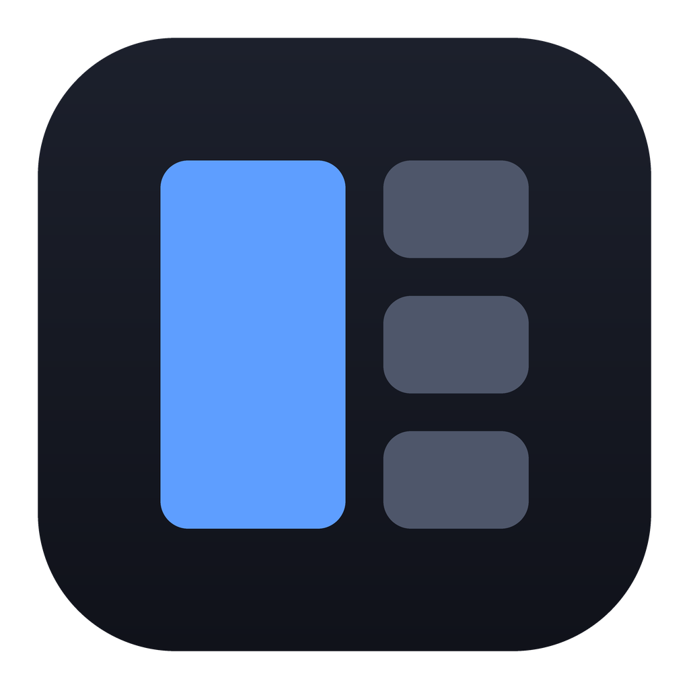

Shipped
generate-app-icon.py — flat panes on a two-stop plate, drawn with PIL at 4× and downsampled.
New
Same mark, Icon Composer layering: plate gradient, top light, rim bevel, glass panes with specular highlights.